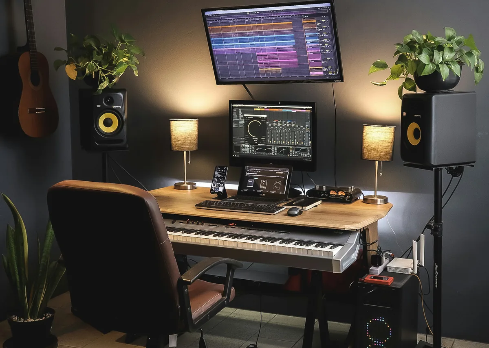
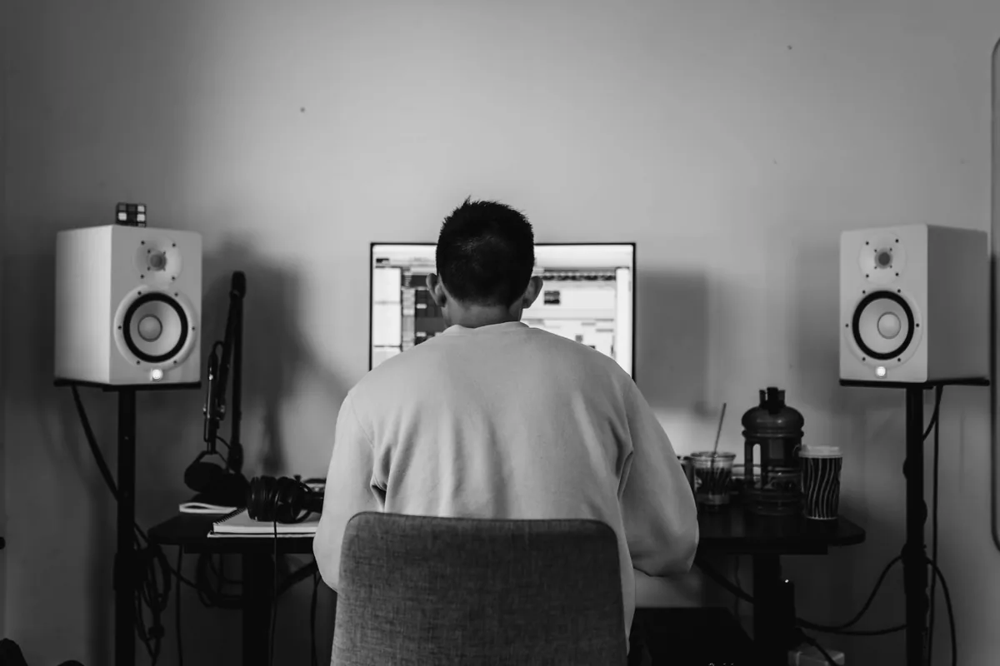

Kiedy zaczynasz miksować w domu, prędzej czy później stajesz przed tym samym pytaniem co tysiące innych producentów: słuchawki czy monitory studyjne? Odpowiedź nie jest oczywista - i zależy od kilku czynników, które warto poznać zanim wydasz pieniądze. Ten artykuł tłumaczy, czym różnią się oba rozwiązania, jakie mają wady i zalety oraz jak podjąć decyzję odpowiednią dla twojej sytuacji.
Czym różni się odsłuch przez słuchawki od odsłuchu przez monitory
Zanim porównamy oba rozwiązania, warto zrozumieć fundamentalną różnicę w tym, jak działają. Monitory studyjne emitują dźwięk do pomieszczenia - fale akustyczne przemierzają przestrzeń, odbijają się od ścian, sufitu i mebli, zanim trafią do twoich uszu. W efekcie słyszysz nie tylko sygnał z głośników, ale też akustykę swojego pokoju. Słuchawki natomiast dostarczają dźwięk bezpośrednio do uszu, z pominięciem pomieszczenia - akustyka pokoju przestaje mieć znaczenie, ale pojawia się inny efekt: każde ucho słyszy wyłącznie sygnał z jednej membrany, bez tzw. przesłuchu między kanałami.
W realnym życiu - na głośnikach samochodowych, domowym kinie, telefonie - dźwięk zawsze przechodzi przez powietrze i miesza się przed dotarciem do słuchacza. Słuchawki symulują coś, czego w naturze praktycznie nie ma. To sprawia, że mix zrobiony wyłącznie na słuchawkach może brzmieć inaczej na głośnikach niż się spodziewasz - szczególnie jeśli chodzi o panoramę stereo i basy.
Zalety i wady monitorów studyjnych
Monitory studyjne to standard w profesjonalnych studiach nagraniowych z jednego powodu: dają ci obraz tego, jak muzyka będzie brzmiała w rzeczywistym świecie. Większość słuchaczy konsumuje muzykę przez głośniki - w samochodzie, przez soundbar, przez przenośny głośnik Bluetooth. Mix zrobiony na monitorach ma większą szansę dobrze brzmieć na tych wszystkich urządzeniach.

Dodatkowym atutem jest naturalny odsłuch stereo. Słyszysz lewy i prawy kanał razem, tak jak słyszą go słuchacze - z naturalnym przesłuchem między uszami. Panorama stereo, przestrzeń i głębia brzmią tak, jak będą brzmiały na finalnym odtwarzaczu.
Wady są jednak poważne dla kogoś pracującego w domu. Po pierwsze - akustyka pomieszczenia. Monitory ujawniają każdą akustyczną wadę twojego pokoju: stojące fale, rezonanse, niepożądane odbicia. Jeśli twój pokój nie jest akustycznie przygotowany, monitory będą cię oszukiwać - usłyszysz bas, którego nie ma, albo nie usłyszysz tego, który jest. Po drugie - głośność. Żeby monitory zaczęły pracować zgodnie ze swoją charakterystyką, trzeba je odtwarzać z odpowiednią głośnością, co w bloku lub w nocy bywa niemożliwe. Po trzecie - cena. Dobra para monitorów studyjnych zaczyna się od ok. 600-800 zł, a akustyczne przygotowanie pokoju to osobny wydatek.
Zalety i wady słuchawek studyjnych
Słuchawki mają jedną fundamentalną przewagę nad monitorami w warunkach domowych: są niezależne od akustyki pomieszczenia. To, co słyszysz w słuchawkach, zależy wyłącznie od jakości samych słuchawek i nagranego sygnału - nie od tego, czy twoje ściany są równoległe, czy masz meble tłumiące basy. To ogromna zaleta dla kogoś, kto mieszka w typowym polskim mieszkaniu bez żadnego wygłuszenia.
Słuchawki pozwalają też pracować cicho - bez przeszkadzania domownikom i sąsiadom, co w praktyce oznacza, że możesz pracować o każdej porze. Są też tańsze w stosunku do jakości odsłuchu - za 400-500 zł możesz kupić słuchawki studyjne, które dają bardzo szczegółowy obraz dźwięku.
Główna wada to wspomniana już nienaturalna separacja stereo. Panorama w słuchawkach jest przesadzona - dźwięki po lewej brzmią bardziej "z lewej" niż będą na głośnikach. Basy bywają trudne do oceny - w zależności od słuchawek, możesz ich słyszeć za dużo lub za mało. Długa praca w słuchawkach bywa też po prostu męcząca fizycznie.
Słuchawki otwarte czy zamknięte - to ma znaczenie
Jeśli decydujesz się na słuchawki do miksowania, typ konstrukcji ma duże znaczenie. Słuchawki zamknięte (closed-back) izolują od otoczenia - świetne do nagrywania, bo nie przebijają się przez mikrofon. Do miksowania są jednak mniej idealne, bo często kolorują dźwięk i mają bardziej "bębniasty" bas wynikający z zamkniętej komory.
Słuchawki otwarte (open-back) przepuszczają powietrze przez membranę - efektem jest znacznie bardziej naturalne, "oddychające" brzmienie, które lepiej oddaje przestrzeń i panoramę stereo. Do miksowania są zdecydowanie lepszym wyborem. Wadą jest brak izolacji - słyszysz otoczenie, a otoczenie słyszy ciebie. Jeśli pracujesz sam w cichym pokoju, to żaden problem.
Popularne modele słuchawek otwartych stosowanych w miksowaniu to Beyerdynamic DT 990 Pro, Sennheiser HD 599 i AKG K702. W kategorii zamkniętych do nagrań często wybierane są Sony MDR-7506 i Beyerdynamic DT 770 Pro.
Jak akustyka pokoju wpływa na odsłuch przez monitory
To kluczowy temat, który jest często pomijany przez osoby kupujące swój pierwszy zestaw monitorów. Możesz mieć monitory warte kilka tysięcy złotych i wciąż miksować źle - jeśli twój pokój ma złą akustykę. Problem leży w fizyce: każde pomieszczenie ma własne częstotliwości rezonansowe (tzw. mody pomieszczenia), które wzmacniają lub tłumią pewne pasma dźwięku niezależnie od tego, co grają twoje głośniki.
Przykład: jeśli twój pokój rezonuje przy 80 Hz, usłyszysz w tym miejscu więcej basu niż faktycznie jest w nagraniu. Będziesz go tłumił na EQ, a mix na zewnątrz wyjdzie cienki i bez basu. Odwrotnie - jeśli pokój pochłania 200 Hz, będziesz dodawał coś, czego nie potrzeba.
Minimalne środki zaradcze to: ustawienie monitorów z dala od ścian (minimum 50-60 cm), unikanie ustawiania ich symetrycznie między dwiema równoległymi ścianami i dodanie miękkiego umeblowania (kanapа, zasłony, regały z książkami tłumią część odbić). Profesjonalne panele akustyczne to kolejny krok - ale to już temat na osobny artykuł.
Czy można miksować tylko na słuchawkach
Tak - i wielu producentów to robi z dobrymi wynikami. Kluczem jest tzw. odsłuch referencyjny: po zrobieniu miksu w słuchawkach, sprawdź jak brzmi na jak największej liczbie różnych urządzeń - głośnikach laptopa, telefonie, samochodzie, tanim bluetoothowym głośniku. To pozwala wyłapać problemy, których słuchawki nie pokazały.
Pomocne są też wtyczki do korekcji słuchawek i symulacji głośników - np. bezpłatny Sonarworks SoundID Reference (wersja trial) czy darmowe profile w aplikacji takiej jak Waves NX. Symulują one charakterystykę różnych systemów odsłuchowych i pomagają zredukować typowe błędy słuchawkowego miksu.
Jeśli regularnie oddajesz muzykę do dystrybucji, warto przynajmniej od czasu do czasu sprawdzać mix na jakimś zestawie głośnikowym - nawet jeśli nie są to dedykowane monitory studyjne. Głośniki komputerowe, soundbar albo zestaw stereo w salonie mogą powiedzieć ci wiele o tym, jak brzmi twoja produkcja poza słuchawkami.
Jakie monitory studyjne wybrać na start
Jeśli decydujesz się na monitory i masz akustycznie w miarę przygotowane miejsce do pracy, poniżej kilka modeli często polecanych na start. Podane ceny są orientacyjne - rynek sprzętu audio zmienia się i warto sprawdzić aktualne oferty przed zakupem.
- Yamaha HS5 - jeden z najczęściej polecanych monitorów w segmencie wejściowym. Znane z "chudego" brzmienia, które zmusza do budowania miksu, który będzie dobrze brzmiał na każdym sprzęcie. Cena: ok. 800-1000 zł za sztukę.
- Adam Audio T5V - monitory z falowodowym wysokotonowcem, który daje wyraźną górę pasma. Dobry wybór jeśli pracujesz dużo z wokalistami i instrumentami akustycznymi. Cena: ok. 600-700 zł za sztukę.
- KRK Rokit 5 G4 - cieplejsze brzmienie niż Yamaha, z wyraźniejszym basem. Mają wbudowany equalizer korekcyjny, który pozwala dostosować charakterystykę do pomieszczenia. Cena: ok. 700-800 zł za sztukę.
- Focal Alpha 50 Evo - wyższy segment, ale świetna czytelność i neutralność. Cena: ok. 2000-2500 zł za sztukę.
Pamiętaj, że monitory kupuje się parami - ceny powyżej to cena jednej sztuki. Do monitorów potrzebujesz też kabli symetrycznych (XLR lub TRS) i interfejsu audio z wyjściami liniowymi - do zwykłego wyjścia słuchawkowego w komputerze monitorów nie podłączysz.
Podsumowanie - co wybrać w twojej sytuacji
Odpowiedź zależy od warunków, w jakich pracujesz. Jeśli mieszkasz w typowym mieszkaniu bez akustycznego przygotowania pokoju, pracujesz w nocy albo masz ograniczony budżet - zacznij od dobrych słuchawek otwartych i uzupełniaj odsłuch sprawdzaniem miksu na różnych urządzeniach. Jeśli masz dedykowany pokój do pracy, możliwość grania głośniej i chcesz budować profesjonalne środowisko - monitory to właściwy kierunek, ale tylko razem z choćby podstawowym przygotowaniem akustycznym.

Najgorszym scenariuszem jest kupno monitorów studyjnych do nieakustycznie przygotowanego pokoju i miksowanie na nich z przekonaniem, że słyszysz prawdę. W takim przypadku dobre słuchawki z odsłuchem referencyjnym dadzą lepsze efekty niż drogie monitory w złym akustycznie pokoju.
Najczęstsze pytania (FAQ)
Czy można robić dobry miks tylko na słuchawkach?
Tak, wielu producentów miksuje wyłącznie na słuchawkach z dobrymi wynikami. Kluczem jest odsłuch referencyjny - po skończeniu miksu sprawdź go na kilku różnych urządzeniach: głośnikach laptopa, telefonie, w samochodzie. Pomocne są też wtyczki symulujące charakterystykę głośników, np. Sonarworks SoundID Reference.
Jakie słuchawki do miksowania - otwarte czy zamknięte?
Do miksowania zdecydowanie lepsze są słuchawki otwarte (open-back). Dają bardziej naturalne, "oddychające" brzmienie i lepiej oddają przestrzeń stereo niż słuchawki zamknięte. Słuchawki zamknięte sprawdzają się przy nagrywaniu (nie przebijają się przez mikrofon), ale do pracy z miksem ich charakterystyka bywa myląca.
Dlaczego miks zrobiony na słuchawkach brzmi inaczej na głośnikach?
W słuchawkach każde ucho słyszy wyłącznie sygnał z jednej membrany - bez naturalnego przesłuchu między kanałami, który istnieje przy odsłuchu głośnikowym. To sprawia, że panorama stereo i przestrzeń brzmią inaczej niż na głośnikach. Basy też bywają trudne do oceny - zależnie od słuchawek możesz ich słyszeć za dużo lub za mało.
Jakie monitory studyjne wybrać na start?
Często polecane modele na start to Yamaha HS5 (neutralne, wymagające brzmienie - zmuszają do budowania solidnego miksu), Adam Audio T5V (wyraźna górna częstotliwość) i KRK Rokit 5 G4 (cieplejsze, z wbudowaną korekcją EQ). Ceny za sztukę zaczynają się od ok. 600-800 zł - monitory kupuje się parami.
Czy akustyka pokoju naprawdę ma aż takie znaczenie przy monitorach?
Tak i to jest jeden z najważniejszych czynników, który jest najczęściej pomijany. Każdy pokój ma własne częstotliwości rezonansowe, które wzmacniają lub tłumią pewne pasma niezależnie od jakości monitorów. Możesz mieć monitory warte kilka tysięcy złotych i wciąż miksować źle, jeśli pokój ma złą akustykę. Minimalne środki to ustawienie monitorów z dala od ścian i miękkie umeblowanie.
Czy do monitorów studyjnych potrzebuję interfejsu audio?
Tak. Monitory studyjne podłącza się przez symetryczne wejścia liniowe (XLR lub TRS), a nie przez wyjście słuchawkowe komputera. Do ich podłączenia potrzebujesz interfejsu audio z wyjściami liniowymi. Karta dźwiękowa wbudowana w komputer do tego nie wystarczy - poza kwestią złącza, jej jakość przetwornikowa jest zbyt niska jak na pracę studyjną.